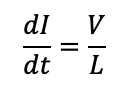

Индуктивность
Определение индуктивности основные соотношения
Катушка индуктивности, дроссель или просто индуктивность – элемент, название которого происходит от слова inductio – навожу, вызываю. Классически и упрощенно индуктивность можно представить как несколько витков, обмотанные вокруг ферромагнитного сердечника. При этом, поскольку витки расположены рядом (и к тому же на одном ферромагнитном сердечнике) то они связаны индуктивно и изменение тока в одном витке вызывает (индуктирует) противоток и противо-ЭДС в другом и рост тока замедляется. Так как в катушке индуктивности все витки соединены последовательно, то они взаимонаводят противоток, препятствующий росту тока. И напротив, если катушку отключить от источника то витки будут наводить друг в друге ЭДС, чтобы ток через индуктивность не изменился. Классический аналог индуктивности есть инерция массы. Более распространенное название катушки индуктивности – дроссель.
Скорость роста тока через индуктивность пропорциональна приложенному к нему напряжению и обратно пропорциональна величине самой индуктивности:
В случае если напряжение на дросселе постоянно ток возрастает по линейному закону: